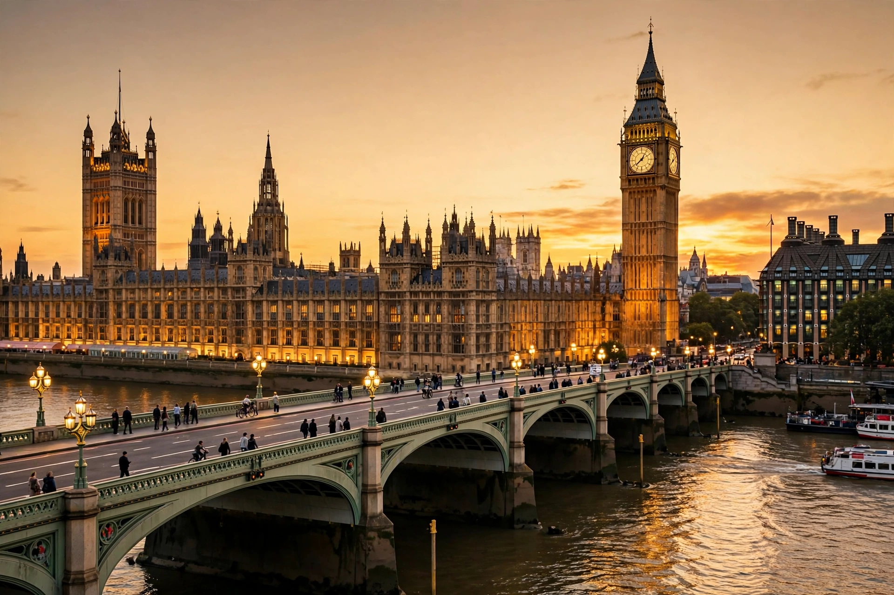

The Palace of Westminster is the meeting place of the Parliament of the United Kingdom, housing the House of Commons and House of Lords in London. Situated on the north bank of the River Thames in the City of Westminster, it is a UNESCO World Heritage Site and an icon of Gothic Revival architecture.

A royal palace from the 11th century, Westminster became Parliament's permanent home in the 16th century. Fire in 1834 destroyed most of it, sparing Westminster Hall (1097), the Jewel Tower and cloisters. Barry and Pugin's Perpendicular Gothic replacement incorporated the surviving hall.
The palace contains about 1,100 rooms along the Thames front, the Commons chamber (rebuilt after Blitz bombing in 1941), the Lords chamber, Central Lobby, and Victoria Tower. The Elizabeth Tower, commonly called Big Ben after its Great Bell, stands at the north end.
The ageing fabric, with asbestos, outdated wiring and fire risk, is the subject of a planned Restoration and Renewal programme.